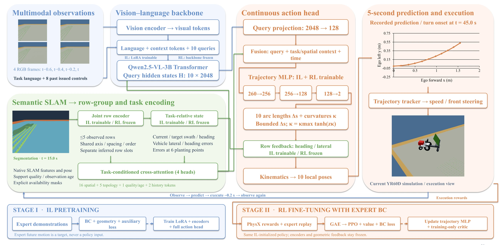
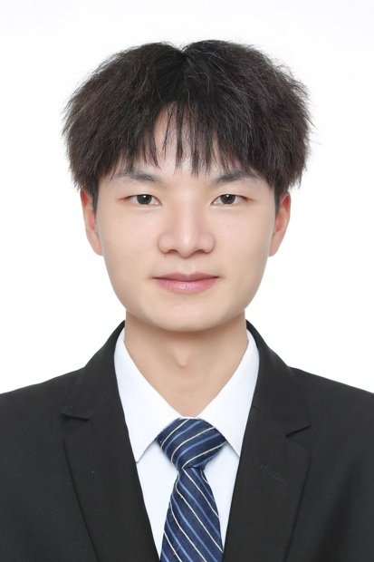
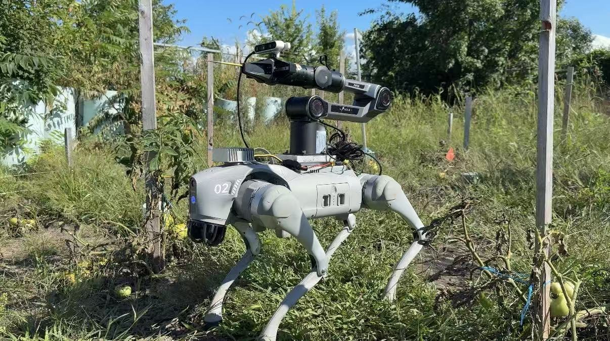

Geometry-Aware VLA Policy Learning
A geometry-guided AutoVLA policy integrating structured crop-row states, continuous trajectory decoding, expert imitation and PPO fine-tuning.
Research details →Robotics · Multimodal AI · Robot Learning
Learning robot actions grounded in physical space.
PhD Candidate, Mechanical Engineering, Zhejiang University
Visiting Scholar, McGill University · Montréal, Canada
I develop vision–language–action models, geometric state representations and robot policies for autonomous systems. My research connects multimodal learning, imitation and reinforcement learning, semantic SLAM and 3D spatial reasoning with motion planning and real-world robotic execution.
I am extending this work toward Physical AI and humanoid robot learning, with an interest in how world models can complement learned action policies through prediction of physical interactions.

VLM / VLA, Transformers, LoRA, trajectory-level behavior cloning, PPO with expert regularization.
Semantic SLAM, stereo vision, LiDAR–IMU fusion, 3D occupancy, feature association and pose optimization.
ROS / ROS2, motion planning, feedback control, quadruped navigation and mobile manipulation.
Policy architectures, spatial intelligence and physical robot systems.

A geometry-guided AutoVLA policy integrating structured crop-row states, continuous trajectory decoding, expert imitation and PPO fine-tuning.
Research details →
Autonomous navigation and mobile manipulation combining LiDAR/IMU state estimation, vision, 3D spatial representation, and target-directed arm execution.
Research details →
SFS-SLAM combines semantic-geometric data association, reliability-weighted point–line optimization and field-structure constraints for repetitive, weakly textured scenes.
Research details →
Language-conditioned 3D local maneuver planning using RGB-D, semantic geometry, robot pose and physically feasible candidate maneuvers.
Research details →Selected experimental recordings and robot demonstrations.
Terrain representation, trajectory generation and occupancy mapping. Project details
Selected peer-reviewed papers · DOI links
Listed separately from published papers. Project descriptions are used for manuscripts whose final submitted titles are not yet confirmed here.
Education, research appointments, publications, technical skills and field demonstrations.
View CV (PDF)Technical overview of VLA, Go2 mobile manipulation and semantic–geometric SLAM.
View Summary (PDF)